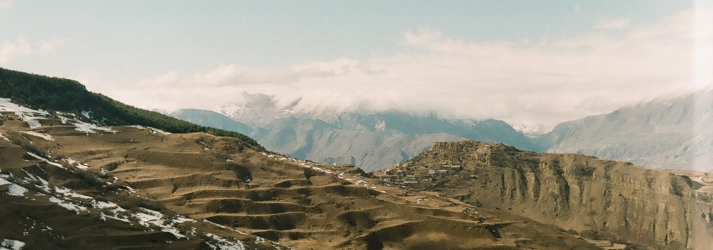
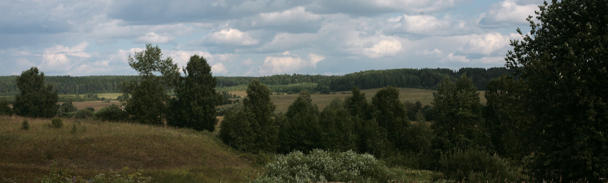

Resources of the Linguistic Convergence Laboratory
One of the tasks of the Linguistic Convergence Laboratory is the creation of language resources. In cooperation with other linguists we collect data for dictionaries, develop spoken corpora of bilingual, dialect, and regional variants of Russian and minority languages of Russia. Beyond this we also develop resources for quantitative research of language contact and distribution of various grammatical features in Daghestan, a multilingual republic in Russia.

Geography of data sources for corpora and dictionaries
